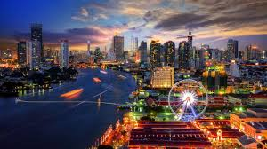

Bangkok

Bangkok, la capital de Tailandia, es una ciudad bulliciosa llena de contrastes. Desde los templos antiguos hasta los rascacielos modernos, Bangkok ofrece una experiencia única que combina la tradición con la modernidad.
Algunos lugares de interés en Bangkok son:
- El Gran Palacio y el Templo del Buda Esmeralda
- El Templo Wat Arun
- Los mercados flotantes
- El barrio de Chinatown
- Los centros comerciales y mercados callejeros
- Los bares y restaurantes en el río Chao Phraya
Chiang Mai

Chiang Mai, en el norte de Tailandia, es conocida por su ambiente relajado, su hermoso paisaje montañoso y su rica cultura. Es un destino popular para los amantes de la naturaleza, los aventureros y los interesados en el arte y la artesanía tailandeses.
Algunos lugares que debes visitar en Chiang Mai son:
- El Templo Wat Phra That Doi Suthep
- El casco antiguo de Chiang Mai
- Los mercados nocturnos
- Las clases de cocina tailandesa
- Las excursiones a la selva y a las aldeas tribales
- Los santuarios de elefantes
Phuket

Phuket, la mayor isla de Tailandia, es famosa por sus playas de arena blanca, sus aguas cristalinas y su animada vida nocturna. Es un destino turístico popular tanto para los amantes del sol y la playa como para los que buscan aventuras acuáticas.
Algunos lugares destacados en Phuket incluyen:
- La playa de Patong
- La isla de Phi Phi
- La playa de Karon
- La ciudad antigua de Phuket
- Las excursiones de buceo y snorkel
- Las actividades de aventura como el paracaidismo y el surf de remo